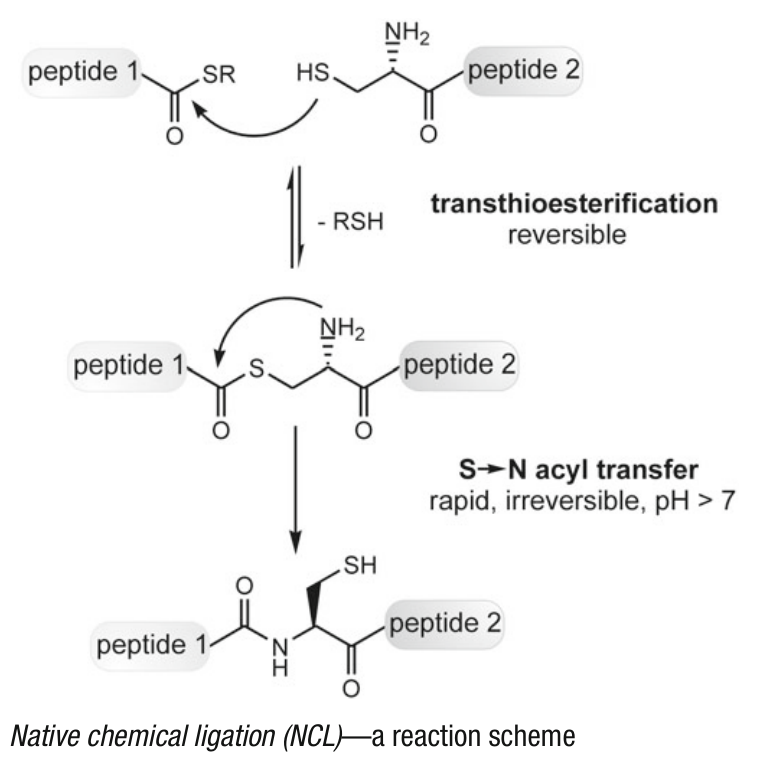
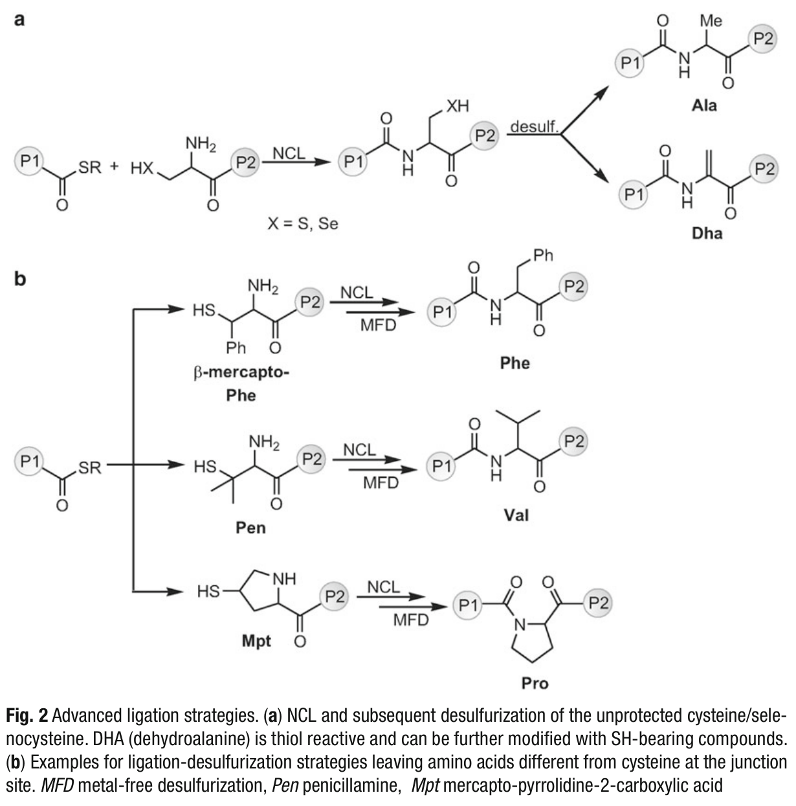
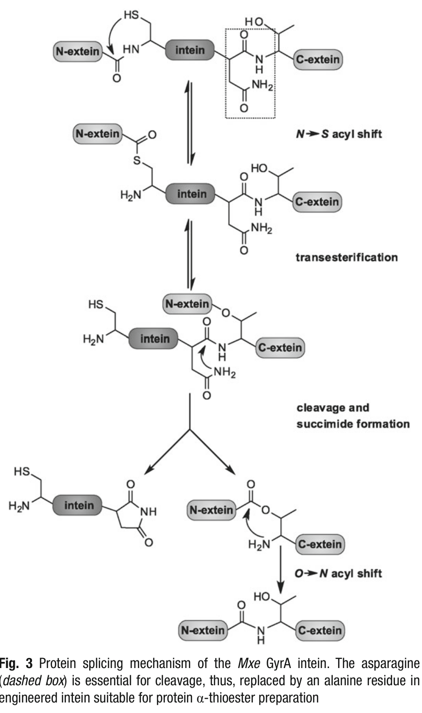
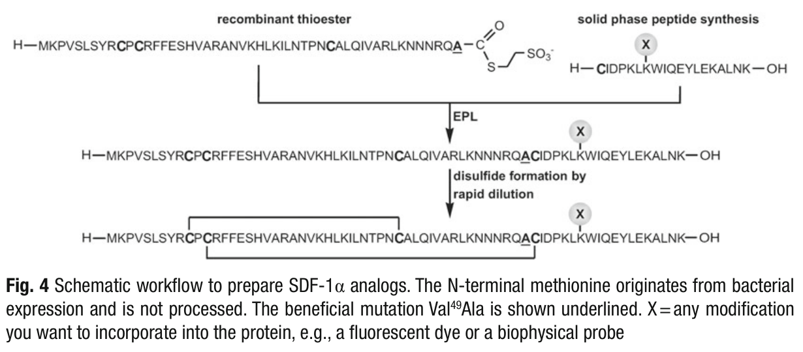

Chapter 7: 通过表达蛋白质连接（EPL）制备C端修饰的趋化因子
Preparation of C-terminally Modified Chemokines by Expressed Protein Ligation
作者：Lars Baumann, Max Steinhagen, Annette G. Beck-Sickinger
来源：Methods in Molecular Biology, vol. 1047 (2013)
为了在分子水平上将趋化因子（chemokines）的结构特征与其功能联系起来，亟需发展位点特异性（site-specific）的修饰策略。这些策略可用于引入荧光染料和/或物理探针，从而使核磁共振（NMR）光谱学、荧光显微镜、荧光共振能量转移（FRET）或荧光相关光谱（FCS）等多种生物和物理技术的研究成为可能。20种天然氨基酸中仅有有限数量的官能团能够支持连接策略，这些策略有助于引入新的功能性基团，进而拓展（半）合成趋化因子的化学选择性和正交反应性。本章主要聚焦于自然化学连接（Native Chemical Ligation, NCL）的精彩发展历程，并提供一个制备C端修饰SDF-1α的通用实验方案，包括实际操作中的技巧和注意事项。作者相信该方案可以轻松适配其他趋化因子以及许多其他蛋白质。
关键词：Expressed protein ligation（表达蛋白质连接）、Native chemical ligation（自然化学连接）、Protocol（实验方案）、Protein ligation（蛋白质连接）、Chemokines（趋化因子）、SDF-1α、Stromal cell-derived factor-1（基质细胞衍生因子-1）、CXCL12
【要点总结】本章核心是利用表达蛋白质连接（EPL）技术对趋化因子SDF-1α进行C端位点特异性修饰。EPL结合了重组DNA技术和多肽合成技术的优势，允许在蛋白质上引入非天然修饰（如荧光标签）。关键前提是NCL方法——一种将两个未保护的多肽片段通过化学选择性反应连接起来的技术。
固相多肽合成（Solid-Phase Peptide Synthesis, SPPS）在多肽合成领域引发了革命性的变化，其优势体现在对生长中肽链的可控操作、自动化合成的可能性，以及中间体和最终产物的高效纯化。通过引入正交保护的氨基酸（orthogonally protected amino acids），可以实现对肽链中官能团的选择性脱保护和修饰。然而，SPPS及其近年来的各种改进技术，只能以合理的产率和纯度获得长度约50个氨基酸的多肽——具体产率和纯度取决于一级序列、疏水性以及在固相载体上的聚集倾向。制备更大的修饰多肽甚至完整蛋白质，则需要对预先合成的片段进行缩合反应，最理想的情况是在不需要保护基的条件下完成。
化学连接（Chemical Ligation, CL）是指通过官能团之间的化学选择性反应，将未保护的多肽片段连接起来，且不影响其他官能团，最终产生骨架修饰的类似物。1992年，Schnölzer等人首次通过α-肽硫代酸（1–50, Gly-αCOSH）与N端溴乙酰肽[BrCH₂CO(53–99)]片段之间的反应，合成了完整的HIV蛋白酶，其中天然的Gly₅₁-Gly₅₂肽键被肽硫酯键取代[1]。两年后的1994年，Dawson等人发表了通过两个未保护多肽片段的化学选择性缩合制备白细胞介素-8（interleukin-8）的工作，得到了具有天然结构的蛋白质[2]。由于产物具有完整的酰胺骨架，作者将这一技术命名为自然化学连接（Native Chemical Ligation, NCL）。由于NCL的前提条件简单——仅需一个N端片段作为肽α-硫酯（peptide α-thioester），以及一个C端片段带有N端半胱氨酸残基（N-terminal cysteine）——该方法被证明具有广泛的适用性，可应用于多种中等大小的蛋白质。
从机制上看，NCL是一个两步过程：首先发生可逆的转硫酯化反应（transthioesterification），随后自发进行不可逆的S→N酰基转移（S- to N-acyl transfer）（图1）。反应受到多种因素的影响，包括反应物浓度、温度、pH值以及合适硫醇的选择。此外，连接位点处C端硫酯化氨基酸的种类也需要仔细考虑[3]。事实上，NCL的基本原理源于Wieland等人的早期观察，他们首次证明了在弱碱性条件下，一个缬氨酰残基（valyl residue）可以从活性硫酯转移到半胱氨酸上，随后发生重排，生成Val-Cys二肽[4]。

图1 自然化学连接（NCL）——反应机理示意图
【要点总结】NCL的两个关键步骤：(1) 可逆的转硫酯化反应——肽α-硫酯与Cys的巯基（-SH）反应形成硫酯中间体；(2) 不可逆的S→N酰基转移——通过分子内重排生成天然的肽键。这是整个EPL技术的化学基础。
自诞生以来，NCL经历了快速的演化。迄今为止，已发展出多种策略，使NCL能够应用于不含半胱氨酸残基或半胱氨酸位置不理想的蛋白质（图2）。Tam等人最早尝试了无半胱氨酸的连接反应，他们选择N端组氨酸（histidine）作为酰基受体，但成功率有限[5]。硒代半胱氨酸（Selenocysteine）——第21种天然氨基酸——其反应机制与半胱氨酸基本相同，但由于更高的亲核性，反应速率更快[6]。

图2 高级连接策略。(a) NCL及随后对未保护半胱氨酸/硒代半胱氨酸的脱硫反应。DHA（脱氢丙氨酸，dehydroalanine）具有硫醇反应性，可进一步用含SH的化合物修饰。(b) 在连接位点留下非半胱氨酸氨基酸的连接-脱硫策略示例。MFD：无金属脱硫（metal-free desulfurization）；Pen：青霉胺（penicillamine）；Mpt：巯基-吡咯烷-2-羧酸（mercapto-pyrrolidine-2-carboxylic acid）
实质性进展来自于将连接所需的硒代半胱氨酸/半胱氨酸残基在连接后转化为丙氨酸（alanine）[7-9]或脱氢丙氨酸（dehydroalanine, DHA）[10]的策略，这一过程被称为脱硫反应（desulfurization）。生成的DHA基团随后还可以进一步与其他硫醇功能化化合物反应，从而在原连接位点引入修饰。温和的无金属脱硫（metal-free desulfurization, MFD）程序[11]的进一步发展，极大地扩展了NCL反应的适用范围，使其不再局限于半胱氨酸连接位点。这是因为该方法即使在存在额外保护半胱氨酸残基的情况下，也能高效地去除硫醇基团，而无需耗时优化。近年来，已发展出在连接位点使用苯丙氨酸（phenylalanine）[12]、缬氨酸（valine）[13,14]、赖氨酸（lysine）[15]、亮氨酸（leucine）[16]和苏氨酸（threonine）[17]的NCL策略。该领域最新的进展是利用硫代脯氨酸（thioproline） followed by脱硫反应的连接技术[18]。对于复杂蛋白质，特别是糖蛋白，还发展出了更高级的NCL策略，如糖辅助糖肽连接（sugar-assisted glycopeptide ligation, SAL）[19-21]或侧链辅助连接（side-chain assisted ligation, SCAL）。
【要点总结】NCL的关键进展是脱硫策略：连接完成后去除Cys/Sec的巯基，使其转化为Ala，从而不引入非天然残基。进一步发展使得连接位点可以扩展到Phe、Val、Lys、Leu、Thr等氨基酸。DHA中间体还可用于二次修饰。
NCL方法学由Chong等人进一步拓展，他们利用工程化内含肽（engineered intein），实现了蛋白质的单柱纯化和硫醇诱导的切割及亲和标签去除，使蛋白质以活性α-硫酯形式释放[22,23]。内含肽（inteins）是内部自剪接蛋白质片段，于20世纪90年代初在酵母中发现[24,25]。Kane等人报道，酿酒酵母（Saccharomyces cerevisiae）中TFP1基因的蛋白质生物合成产生单一的翻译产物，该产物在翻译后自我切割，不依赖于其他因子。类似于RNA水平的内含子（introns）和外显子（exons），自剪接元件被称为内含肽（internal protein sequence，内部蛋白质序列），其两侧分别为N端外含肽（N-extein）和C端外含肽（C-extein）（external protein sequence，外部蛋白质序列）。在内含肽介导的自催化剪接过程中，N端外含肽和C端外含肽被连接在一起，同时内含肽被释放（图3）。

图3 Mxe GyrA内含肽的蛋白质剪接机制。天冬酰胺（虚线框所示）对切割至关重要，因此在适用于蛋白质α-硫酯制备的工程化内含肽中，该残基被替换为丙氨酸
蛋白质剪接由自发形成的（硫）酯键启动，通过N→S或N→O酰基转移完成。对来自Mycobacterium xenopi（Mxe）的GyrA内含肽的X射线光谱研究揭示，内含肽的两端空间位置非常接近，且连接N端外含肽与内含肽的肽键处于顺式（cis）构象。这种不利的顺式构象使酰胺键不稳定，通过半胱氨酸巯基的亲核攻击促进初始酰基转移[26]。这一可逆的硫酯形成之后，N端外含肽发生酰基转移到C端外含肽的N端氨基酸（Cys、Ser或Thr）上。然后，在最关键的步骤中，内含肽C端的天冬酰胺（Asn）形成琥珀酰亚胺（succinimide），导致内含肽释放，同时N端外含肽/C端外含肽被连接起来，并通过S→N或O→N酰基转移重排形成天然的蛋白质结构[27]。Chong等人引入的工程化内含肽在关键Asn位置携带一个丙氨酸（Ala）替代，因此无法执行剪接反应；然而，初始的N→S酰基转移并不受影响。因此，其主要优势在于可以通过硫醇诱导切割制备重组来源的活性蛋白质α-硫酯，并将其用于NCL反应，以实现对几乎任意大小蛋白质的位点特异性标记。
由于至少一个片段来源于重组表达，Muir等人将该方法称为表达蛋白质连接（Expressed Protein Ligation, EPL）[28]。利用内含肽技术，也可以制备携带N端Cys的蛋白质——使用工程化内含肽的C端，通过温度和pH的变化释放目标蛋白质[29]。基于内含肽的技术已有商业化产品，New England Biolabs公司以IMPACT™（Intein-Mediated Purification with an Affinity Chitin-Binding Tag）系统名称提供多种试剂盒解决方案。
尽管EPL为蛋白质的N端或C端标记提供了广泛的可能性，但剪接反应需要弱碱性（pH 7.5–8.5）和非变性条件，因此等电点（pI）在此范围内的蛋白质难以通过此方法制备。此外，错误折叠和未折叠的目标蛋白质可能容易聚集，这使得优化合适的切割和洗脱条件变得必要。不过，内含肽和几丁质结合结构域（chitin-binding domain）结构的高稳定性使其能够适应高盐浓度等苛刻条件，并能耐受至少0.2%的Tween 20和Triton X-100等去垢剂。
总之，并非本章提到的所有策略都适用于你的目标蛋白质，但每种策略都为特定问题提供了解决方案。因此，仔细规划工作并提前选择最佳策略至关重要。
【要点总结】EPL的核心原理：(1) 利用工程化内含肽（Asn→Ala突变）在硫醇诱导下释放蛋白质α-硫酯；(2) 该硫酯与含N端Cys的合成多肽片段通过NCL反应连接。EPL结合了重组表达（大片段）和化学合成（小片段修饰）的双重优势。商业化的IMPACT™系统使该技术易于使用。需注意pH和蛋白质聚集问题。
（见Note 1的注意事项）
pTXB1载体（NEB）——用于内含肽融合表达的载体
SDF-1(1–49) cDNA
正向引物（Forward primer）: 5′-GGT GGT CAT ATG AAG CCC GTC AGC CTG AG-3′
反向引物（Reverse primer）: 5′-GGT GGT TGC TCT TCC GCA CGC TTG TCT GTT GTT GTT C-3′
限制性内切酶（Restriction enzymes）: NdeI和SapI
虾碱性磷酸酶（Shrimp Alkaline Phosphatase, SAP）
DNA制备试剂盒（DNA preparation kit）
PCR/凝胶纯化试剂盒（PCR/gel clean-up kit）
E. coli DH5α：感受态细胞（competent cells）——用于克隆
E. coli ER2566：感受态细胞——用于蛋白质表达（IMPACT系统推荐菌株）
Luria肉汤（Luria Broth, LB）培养基
异丙基β-D-1-硫代半乳糖苷（Isopropyl β-D-1-thiogalactopyranoside, IPTG）：配制1 M储存液，分装后于−20 °C保存
氨苄西林（Ampicillin）：使用钠盐（sodium salt）配制100 mg/mL水溶液，分装后于−20 °C保存。务必使用氨苄西林钠盐！
基础缓冲液（Basis Buffer, BB）: 20 mM HEPES, 0.5 M NaCl, 1 mM EDTA, pH 8
洗涤缓冲液（Wash Buffer, WB）: BB含2 M尿素（urea）, 0.2% Tween 20, pH 8
增溶缓冲液（Solubilization Buffer, SB）: BB含8 M尿素, pH 8
柱缓冲液（Column Buffer）: BB含3 M尿素, pH 8
切割缓冲液（Cleavage Buffer, CB）: BB含2 M尿素, 0.2% Tween 20, 0.2 M MESNA, pH 8
连接缓冲液（Ligation Buffer）: 100 mM磷酸钠（sodium phosphate）, 6 M盐酸胍（guanidinium chloride）, pH 6
复性缓冲液（Refolding Buffer）: 100 mM磷酸钠缓冲液, 0.3 M蔗糖（sucrose）, 0.3 mM GSH/0.3 mM GSSG (1:1), pH 7.4
几丁质珠（Chitin beads）（NEB）
HCl (37%)
0.3 M NaOH
1 M MgCl₂
DNase I
三(2-羧乙基)膦（Tris(2-carboxyethyl)phosphine, TCEP）
Fmoc-Nα-氨基酸及树脂（Fmoc-Nα-amino acids and resins）
N,N-二甲基甲酰胺（Dimethylformamide, DMF）
二氯甲烷（Dichloromethane, DCM）
哌啶（Piperidine）
水合肼（Hydrazine monohydrate）
乙醚（Diethyl ether, Et₂O）
二异丙基碳二亚胺（Diisopropylcarbodiimide, DIC）
1-羟基苯并三唑单水合物（Hydroxybenzotriazole monohydrate, HOBt）
三氟乙酸（Trifluoroacetic acid, TFA）: HPLC级
硫代苯甲醚（Thioanisole, TA）
乙二硫醇（Ethanedithiol, EDT）
Kaiser测试溶液I: 1 g茚三酮（ninhydrin）溶于20 mL乙醇
Kaiser测试溶液II: 80 g苯酚（phenol）溶于20 mL乙醇
Kaiser测试溶液III: 0.4 mL氰化钾（KCN）水溶液(1 mM)溶于20 mL吡啶（pyridine）
琼脂糖（Agarose）
Rotiphorese® Gel 30：即用型溶液（Roth）
N,N,N',N'-四甲基乙二胺（TEMED）
过硫酸铵（Ammonium persulfate, APS）: 配制10%储存液(w/v)，分装于−20 °C保存
十二烷基硫酸钠（Sodium dodecyl sulfate, SDS）: 配制10%储存液(w/v)，室温保存
还原SDS-PAGE上样缓冲液: 62.5 mM Tris, 20%甘油(v/v), 5% β-巯基乙醇, 1% SDS (w/v), 0.0025%溴酚蓝(w/v), pH 7.8（用HCl调节）
染色液: 1.5 mM氨基黑10B（amido black 10B）, 50%甲醇(v/v), 10%乙酸(v/v)
脱色液: 含50%甲醇(v/v)和10%乙酸(v/v)的水溶液
乙酸: 配制10%储存液(v/v)，室温保存
乙腈（Acetonitrile, ACN）: HPLC级
水: 超纯水（ultrapure）
Amicon Ultra-15离心超滤单元（MW截留: 3 kDa）
层析柱：玻璃或塑料材质，直径2–3 cm，长度约20 cm
2 mL注射器（带Luer接口），配备聚四氟乙烯滤板（teflon frit）和推杆
Luer止流器
电泳设备
分析和制备型高效液相色谱（HPLC）系统，配备C18色谱柱（见Note 2）
质谱仪（Mass spectrometer）（见Note 3）
比色皿分光光度计
French press（法国压力机）
0.45 μm滤膜
【要点总结】材料部分涵盖了完整的EPL实验流程所需的所有试剂和设备，包括：克隆工具（pTXB1载体、限制酶NdeI/SapI）、蛋白质表达与纯化（IPTG、几丁质珠、MESNA硫酯切割）、多肽合成（Fmoc氨基酸、DIC/HOBt偶联体系）、以及分析检测（HPLC、MS、SDS-PAGE）。关键试剂如MESNA用于硫醇诱导切割，TCEP用于还原。
本节提供了一个通用的实验方案，用于制备在56位修饰的功能性人SDF-1α。在先前的研究中，作者通过引入光不稳定的6-硝基藜芦氧羰基（6-nitroveratryloxycarbonyl, Nvoc）基团鉴定了这一特定位位，并发现在信号转导实验中，与重组M-SDF-1α相比，修饰前和UV照射后均未发现差异[30]。该策略允许在同一分子中直接比较修饰蛋白和天然蛋白。在此研究基础上，该位点进一步通过连接羧基荧光素（carboxyfluorescein）基团进行评估，用于显微观察CXC受体4（CXCR4）的内吞研究[31]。
SDF-1α属于CXC家族趋化因子，由68个氨基酸组成。与几乎所有趋化因子一样，SDF-1α拥有四个高度保守的半胱氨酸残基（Cys₉, Cys₁₁, Cys₃₄和Cys₅₀），并采用典型的三级结构：具有灵活的N端、中央反平行三股β折叠（antiparallel three-stranded β-sheet），上方覆盖一个α螺旋片段。出于实际原因，作者选择Val₄₉-Cys₅₀肽键作为连接位点（junction site），以便重组表达较长的N端片段SDF-1(1–49)，同时使化学合成和修饰的C端片段SDF-1(50–68)尽可能短（图4）。
此外，作者将49位的缬氨酸（Val）突变为丙氨酸（Ala），因为蛋白质硫酯的反应活性取决于最后一个氨基酸的侧链。先前研究表明，缬氨酸、亮氨酸（leucine）和脯氨酸（proline）在连接位点处的反应性较差[3]。由于蛋白质剪接由逆向酰基转移反应（N→S）启动，基于内含肽的纯化技术同样遵循这一规律。此外，该位置的天冬氨酸（Asp）经常导致融合蛋白在体内发生明显切割，影响蛋白质硫酯的制备。因此，应避免在N端片段C端使用上述氨基酸。最佳折衷方案似乎是在此位置使用丙氨酸，但需要针对每种蛋白质在功能和生物活性方面进行单独验证。

图4 制备SDF-1α类似物的工作流程示意图。N端的甲硫氨酸来源于细菌表达，未被加工去除。有益的Val₄₉Ala突变以下划线标示。X = 需要引入蛋白质中的任何修饰，如荧光染料或生物物理探针
【要点总结】方法总览：SDF-1α(68 aa)被分为两个片段——N端SDF-1(1-49)通过重组表达为intein融合蛋白并转化为α-硫酯；C端SDF-1(50-68)通过Fmoc-SPPS化学合成并在56位引入修饰。关键设计决策：Val49→Ala突变以提高硫酯反应活性，选择Cys50作为NCL连接位点。
(Synthesis and Purification of the Modified C-terminal Fragment by Fmoc-Based SPPS)
多肽通过自动化Fmoc/ᵗBu固相多肽合成（SPPS）逐步组装；该方法同样可以轻松地手动完成（见Note 4）。
称取25 μmol Fmoc-Lys(Boc)-OH预载Wang树脂，置于注射器中。用1 mL DMF预溶胀树脂15分钟。
Fmoc脱保护：用0.5 mL 20%哌啶/DMF溶液(v/v)处理树脂20分钟。吸除溶液，用1 mL DMF洗涤树脂一次。重复脱保护步骤以确保Fmoc基团定量去除，然后用1 mL DMF洗涤树脂五次。
氨基酸双偶联（double coupling）：称取7当量Fmoc-Nα-氨基酸和7当量HOBt，用DMF溶解至终浓度0.5 M。涡旋溶液，加入7当量DIC，再次涡旋。将混合液倒入预溶胀的树脂上，使悬浮液反应45分钟。吸除溶液，用1 mL DMF洗涤一次，以相同方式重复偶联。最后用1 mL DMF洗涤树脂五次。（上述当量数针对作者实验室的特定自动化合成仪进行了优化。手动偶联也可仅用5当量，或采用你标准的多肽合成流程。）
如果手动进行SPPS，可以通过Kaiser测试检测偶联是否完全（见Note 5）。
对序列中的每个氨基酸重复步骤3–5。在56位引入Fmoc-Lys(Dde)-OH（见Note 6和7）。
去除Dde保护基：用0.5 mL 2%水合肼/DMF(v/v)溶液处理10分钟，重复10次。通过301 nm处光谱测量检测脱保护是否完全（见Note 8）。
在释放的氨基上偶联氨基反应性探针/染料。激活构建块或使用预激活构建块。偶联条件需根据具体探针进行个体化优化。
全切裂解：用1 mL三氟乙酸（TFA）、硫代苯甲醚（TA）和乙二硫醇（EDT）混合液(TFA/TA/EDT = 90/7/3)处理3小时，室温。
从冰冷Et₂O中沉淀多肽。多肽在几分钟后以白色浑浊固体出现。如未出现沉淀，将溶液置于−20 °C过夜。离心，用1 mL冰冷Et₂O洗涤沉淀至少五次，直至无硫醇气味。
蒸发残留Et₂O，用RP-HPLC和质谱分析多肽。
从0.1% TFA水溶液中冻干多肽，粉末于4 °C保存。
【要点总结】C端片段(50-68)的SPPS要点：(1) 使用Fmoc-Lys(Boc)-OH预载Wang树脂；(2) 采用双偶联策略（7 eq.氨基酸，DIC/HOBt活化）；(3) 56位使用Fmoc-Lys(Dde)-OH正交保护，Dde用2%水合肼选择性脱除；(4) 脱保护后在该位点偶联目标修饰分子；(5) TFA/TA/EDT (90:7:3)全切裂解，乙醚沉淀纯化。
在进行蛋白质工作之前，需要构建表达载体，将[Ala₄₉]-SDF-1(1–49)的序列与内含肽（intein）和几丁质结合结构域（chitin-binding domain）置于同一开放阅读框中。推荐使用New England Biolabs（NEB）的pTXB1载体。具体操作步骤因供应商和设备不同而不作详细描述。
执行标准PCR扩增[Ala₄₉]-SDF-1(1–49) cDNA，在编码序列两侧引入NdeI和SapI限制性内切酶位点。注意：引物需引入编码49位Ala的密码子。
分别用NdeI和SapI消化质粒和PCR产物。消化后，对线性化质粒DNA进行去磷酸化处理，跑1%琼脂糖凝胶纯化线性化质粒和插入DNA。切取目标凝胶条带，提取DNA（如使用PCR/凝胶纯化试剂盒）。
连接纯化的质粒和插入DNA，直接转化E. coli DH5α细胞。将细胞涂布于含100 μg/mL氨苄西林的琼脂平板上，37 °C过夜培养。
挑取单克隆，提取质粒DNA（如使用DNA制备试剂盒），通过DNA测序验证序列和开放阅读框的正确性。
选择阳性克隆，转化E. coli ER2566细胞。涂布于含100 μg/mL氨苄西林的琼脂平板上，37 °C过夜培养。制备甘油菌种，−80 °C保存。
【要点总结】克隆要点：使用pTXB1载体（NEB），通过NdeI/SapI双酶切将[Ala49]-SDF-1(1-49)基因与intein-CBD融合。关键是引物设计时要引入Val49→Ala的突变密码子。先在DH5α中验证序列，再转入ER2566（IMPACT系统专用表达菌株）进行表达。
将pTXB1-[Ala₄₉]-SDF-1(1–49)转化的E. coli ER2566细胞在200 mL含100 μg/mL氨苄西林的LB培养基中37 °C预培养过夜。
离心收集预培养细胞（5,000 × g, 5分钟），用含氨苄西林(100 μg/mL)的LB培养基重悬。将悬液加入4 L LB培养基（含100 μg/mL氨苄西林）中，调至OD₆₀₀ = 0.1。37 °C培养至OD₆₀₀达到0.8–1，然后用1 mM IPTG诱导蛋白质表达。
让细菌表达蛋白质4–6小时。每小时取样(100 μL)，−20 °C保存。
离心细胞悬液（5,000 × g, 4 °C），弃上清。用80 mL BB重悬沉淀。
在冰上或4 °C条件下进行以下操作（除非另有说明）。
使用French press破碎细胞直至均匀（见Note 9）。
DNA消化：为降低粘度，在5 mM MgCl₂存在下加入DNase I处理悬液。室温振摇孵育30分钟。
离心悬液（12,000 × g, 45分钟），取样(100 μL)，冷冻上清。用10 mL WB洗涤沉淀两次。
用20 mL SB增溶包涵体（inclusion bodies），温和搅拌过夜。
离心悬液（208,000 × g, 35分钟），取样(50 μL)，冷冻上清。
用10–20 mL SB重复增溶一次，分别保存。
跑12% SDS-PAGE检查样品中融合蛋白的表达进度和位置。预期蛋白质存在于包涵体中，但也可能出现在可溶性组分中。在确认蛋白质表达位置之前，不要丢弃上清！
准备两根几丁质柱用于亲和层析纯化表达的融合蛋白。将几丁质珠浆液装入柱中，使其沉降（最终床体积15 mL）。用水洗涤几丁质珠（20个床体积），然后用含3 M尿素的柱缓冲液平衡（10个床体积）。
用BB缓慢稀释增溶的包涵体至尿素终浓度为3 M，将溶液加载到预装的几丁质柱上。流速不超过1 mL/min。进一步用BB将流出液稀释至2 M尿素，进行第二次上柱。取样(100 μL)。
用20个床体积的WB洗涤柱子，排尽残留缓冲液。
硫醇诱导的蛋白质切割：加入两个床体积的CB，使其快速流出。再加入一个床体积的CB，4 °C过夜孵育。
次日，以5 mL分份收集洗脱的蛋白质硫酯，再加3个床体积的WB洗涤柱子（同样以5 mL分份收集）。将各分份的pH调至7，分别保存。取样(50 μL)。如果诱导切割效果不理想，重复步骤15。
通过15% SDS-PAGE分析样品，检查上柱和切割效率。合并含蛋白质硫酯的分份，用质谱验证身份。务必包含几丁质珠的样品，因为蛋白质硫酯可能沉淀，如未发现则会降低产率。
使用Amicon Ultra-15超滤装置（MW截留3 kDa）浓缩蛋白质硫酯。通过三轮添加连接缓冲液并浓缩至最小体积来交换缓冲液为连接缓冲液（见Note 10）。
分装约500–1,000 μL，−80 °C保存备用。纯化[Ala₄₉]-SDF-1(1–49)-MESNA的平均产率约为4 mg/L表达培养物。
【要点总结】蛋白质硫酯制备要点：(1) 4 L规模表达，IPTG诱导4-6h；(2) 蛋白以包涵体形式表达，用8M尿素增溶；(3) 几丁质柱亲和纯化（intein-CBD标签），3M→2M尿素梯度稀释上柱；(4) MESNA（0.2M）诱导intein切割，4°C过夜释放蛋白质α-硫酯；(5) 产率约4 mg/L培养物。关键注意：始终监测蛋白质是否在珠上沉淀。
在冰上解冻一份溶解的硫酯[Ala₄₉]-SDF-1(1–49)-MESNA（见3.3节），通过分光光度法测定蛋白质浓度（用BB稀释，ε₂₈₀ = 1,490/M⁻¹/cm⁻¹）。测量前立即稀释样品以防止聚集。或者通过Bradford assay测定蛋白质量。浓度范围在5–10 mg/mL之间。
向冰冷的硫酯溶液中加入2–3当量C端肽（见3.1节），温和搅拌。加入TCEP至终浓度5 mM，室温孵育30分钟。
使溶液升温至30 °C，通过将pH调至7.8启动反应。在30 °C下温和搅拌孵育。
为监测反应进度，取样(5 μL)，用10%乙酸1:10稀释，通过分析型RP-HPLC分析（见Note 11）。用质谱验证产物形成。
反应完成后，用10%乙酸将反应混合液稀释至5 mL，用0.45 μm滤膜过滤，通过制备型RP-HPLC纯化混合物。
冻干含产物的分份。
【要点总结】NCL连接反应要点：(1) 蛋白硫酯浓度5-10 mg/mL；(2) C端肽过量2-3当量推动反应进行；(3) TCEP (5 mM)保持还原环境防止二硫键形成；(4) 30°C, pH 7.8为最佳反应条件；(5) 通过分析型RP-HPLC监测反应进度。如有需要，可加入催化量硫代苯酚钠（0.1 eq.）加速反应。
修饰的[Ala₄₉]-SDF-1α通过快速稀释法（rapid dilution）进行复性。将蛋白质溶解至终浓度5–10 mg/mL的100 mM磷酸缓冲液，6 M盐酸胍，pH 6中。
制备复性缓冲液（100体积），不含GSH/GSSG氧化还原系统，在温和搅拌下使溶液达到4 °C。然后加入氧化还原系统（各0.3 mM），检查pH，必要时重新调节。
缓慢逐滴加入蛋白质溶液到复性缓冲液中。每加100 μL后等待30分钟再加下一份。确保液滴正确分散并均匀分布后再加入下一份。
在相同条件下孵育复性混合液至少16小时。通过RP-HPLC监测复性进度。通常观察到保留时间的偏移（见Note 12）。
用HCl酸化溶液(pH 3)，使用Amicon Ultra-15超滤装置浓缩至约5 mL。
过滤溶液（0.45 μm滤膜），用RP-HPLC分离复性产物。
合并分份，用高分辨率质谱技术如FT-ICR-ESI-MS进行分析。
冻干正确折叠的蛋白质，4 °C保存。
蛋白质用所需缓冲液或纯水复溶。
该方法已用于制备人IL-8 [32,33]和SDF-1类似物[30,31]。对于需要天然条件的酶连接反应，请参考文献[34]。
【要点总结】复性要点：(1) 采用快速稀释法——逐滴加入(每100 μL间隔30 min)到100倍体积的复性缓冲液中；(2) 氧化还原系统GSH/GSSG (1:1, 各0.3 mM)促进二硫键正确配对；(3) 4°C, 16h以上；(4) RP-HPLC监测——正确折叠产物保留时间发生偏移；(5) 如果效果不佳，可降低蛋白质浓度或尝试透析复性。
【安全警告】溶剂和试剂可能有害！请仔细阅读材料安全数据表（MSDS），并遵循推荐的安全说明。遵守转基因生物操作和处理的国家法规。
【HPLC系统】作者实验室使用LaChrome（Merck Hitachi）分析型HPLC系统，包括二极管阵列检测器L7455、自动进样器L7200、泵7100、柱温箱L2350，以及分析型C18色谱柱(250 mm × 4.6 mm, 5 μm, 300 Å, Grace Vydac)。制备型HPLC系统（Shimadzu）配备制备型(250 mm × 21 mm, 10 μm, 90 Å)和半制备型(250 mm × 10 mm, 5 μm, 300 Å) C18色谱柱（Phenomenex）。
【质谱分析】常规质谱分析在Ultraflex III MALDI-TOF/TOF质谱仪（Bruker Daltonics）上进行。
【手动vs.自动合成】通用方案中描述的是手动多肽合成。应在每个氨基酸偶联后进行Kaiser测试以确保反应完全。作者实验室使用Syro II机器人（MultiSynTech）进行自动化SPPS。如果配备自动化设备，使用你建立的标准方案进行多肽制备即可，因为该序列不属于困难序列。
【Kaiser测试】Kaiser测试是一种快速的、基于茚三酮的定性检测游离一级胺的方法。取少量树脂珠放入1.5 mL管中，加入1-2滴Kaiser测试溶液I-III。95 °C孵育5分钟。蓝色溶液表示存在游离胺。注意：该测试对脯氨酸（Proline）无效，因为脯氨酸是二级胺！
【修饰位点选择】你可以修饰不同于Lys₅₆的任何位置。作为替代方案，我们建议68位的赖氨酸[35]。从结构角度考虑，修饰基团应面向溶液。无论如何，在你想引入修饰的位置引入Fmoc-Lys(Dde)-OH！
【Dde保护基】Dde保护基可以使用2%水合肼选择性地正交脱除（不影响其他保护基）。赖氨酸侧链上释放的氨基可用于进一步修饰，如引入染料、额外的肽结构或翻译后修饰。
【Dde脱保护检测】通过301 nm处吸光度测量检查Dde脱保护是否完全。收集第一次脱保护步骤后的裂解液，用1 mL DMF洗涤树脂，合并两种溶液（终体积1.5 mL）。最后一次脱保护后同样操作。第一次切割步骤预期高吸光度值(>10)，而最后一次的吸光度不应超过0.1。重要：不饱和碳氢化合物（如Aloc保护基的烯烃官能团）据报道会受此裂解反应影响[36]。因此，加入200当量烯丙醇（allyl alcohol）可防止这些基团被还原。
【细胞破碎替代方案】如果没有French press，可使用超声破碎或反复冻融循环。避免使用溶菌酶（lysozyme）进行细胞裂解，因为它会损坏几丁质珠并大幅缩短其使用寿命！
【蛋白质浓缩替代方案】其他蛋白质浓缩装置也可能适用，特别是对于更大体积。作者使用Minimate切向流过滤（TFF）系统（Pall Corporation）浓缩高达500 mL的体积。
【加速连接反应】有时连接反应进行缓慢，产率较低。为加速反应活性，可加入催化量(0.1当量)的硫代苯酚钠（sodium thiophenolate），其在原位（in situ）形成更具反应活性的硫酯。为避免快速水解，在pH 7-8下进行反应。可提高温度同时降低pH，或反之亦然。
【复性优化】如果上述快速稀释方案不奏效，降低蛋白质终浓度（例如将复性缓冲液加倍至200体积）。确保未折叠蛋白质纯度≥90%。或者可尝试透析复性[30,31]，但作者使用所述快速稀释方案获得了最佳结果。如果将方案转移到其他蛋白质，可能需要优化复性操作。建议在分析规模上筛选各种浓度和比例的盐、添加剂、pH值和氧化还原系统，类似于文献[37]中所述的方法。
1. Schnölzer M, Kent SB (1992) Constructing proteins by dovetailing unprotected synthetic peptides: backbone-engineered HIV protease. Science 256:221–225
2. Dawson PE et al (1994) Synthesis of proteins by native chemical ligation. Science 266:776–779
3. Hackeng TM, Griffin JH, Dawson PE (1999) Protein synthesis by native chemical ligation: expanded scope by using straightforward methodology. Proc Natl Acad Sci U S A 96:10068–10073
4. Wieland T et al (1953) Ueber Peptidsynthesen. 8. Bildung von S-haltigen Peptiden durch intramolekulare Wanderung von Aminoacylresten. Liebigs Ann Chem 583:129–149
5. Zhang LS, Tam JP (1997) Orthogonal coupling of unprotected peptide segments through histidyl amino terminus. Tetrahedron Lett 38:3–6
6. Raines RT, Hondal RJ, Nilsson BL (2001) Selenocysteine in native chemical ligation and expressed protein ligation. J Am Chem Soc 123:5140–5141
7. Bang D et al (2006) Dissecting the energetics of protein alpha-helix C-cap termination through chemical protein synthesis. Nat Chem Biol 2:139–143
8. Bang D et al (2005) Total chemical synthesis and X-ray crystal structure of a protein diastereomer: [D-Gln35]ubiquitin. Angew Chem Int Ed Engl 44:3852–3856
9. Yan LZ, Dawson PE (2001) Synthesis of peptides and proteins without cysteine residues by native chemical ligation combined with desulfurization. J Am Chem Soc 123:526–533
10. Bernardes GJ et al (2008) Facile conversion of cysteine and alkyl cysteines to dehydroalanine on protein surfaces. J Am Chem Soc 130:5052–5053
11. Wan Q, Danishefsky SJ (2007) Free-radical-based, specific desulfurization of cysteine. Angew Chem Int Ed Engl 46:9248–9252
12. Crich D, Banerjee A (2007) Native chemical ligation at phenylalanine. J Am Chem Soc 129:10064–10065
13. Chen J et al (2008) Native chemical ligation at valine. Angew Chem Int Ed Engl 47:8521–8524
14. Haase C, Rohde H, Seitz O (2008) Native chemical ligation at valine. Angew Chem Int Ed Engl 47:6807–6810
15. Liu XW et al (2009) Dual native chemical ligation at lysine. J Am Chem Soc 131:13592–13593
16. Harpaz Z et al (2010) Protein synthesis assisted by native chemical ligation at leucine. ChemBioChem 11:1232–1235
17. Chen J et al (2010) A program for ligation at threonine sites. Tetrahedron 66:2277–2283
18. Danishefsky SJ et al (2011) An advance in proline ligation. J Am Chem Soc 133:10784–10786
19. Brik A et al (2006) Sugar-assisted glycopeptide ligation. J Am Chem Soc 128:5626–5627
20. Ficht S et al (2007) Second-generation sugar-assisted ligation. Angew Chem Int Ed Engl 46:5975–5979
21. Yang YY et al (2007) Sugar-assisted ligation in glycoprotein synthesis. J Am Chem Soc 129:7690–7701
22. Chong S et al (1997) Single-column purification of free recombinant proteins using a self-cleavable affinity tag. Gene 192:271–281
23. Chong S et al (1998) Utilizing the C-terminal cleavage activity of a protein splicing element. Nucleic Acids Res 26:5109–5115
24. Hirata R et al (1990) Molecular structure of VMA1 gene. J Biol Chem 265:6726–6733
25. Kane PM et al (1990) Protein splicing converts the yeast TFP1 gene product. Science 250:651–657
26. Klabunde T et al (1998) Crystal structure of GyrA intein from Mycobacterium xenopi. Nat Struct Biol 5:31–36
27. David R, Richter MP, Beck-Sickinger AG (2004) Expressed protein ligation. Method and applications. Eur J Biochem 271:663–677
28. Muir TW, Sondhi D, Cole PA (1998) Expressed protein ligation: A general method for protein engineering. Proc Natl Acad Sci U S A 95:6705–6710
29. Southworth MW et al (1999) Purification of proteins fused to the intein of Mycobacterium xenopi gyrase A. Biotechniques 27:110–120
30. Baumann L, Beck-Sickinger AG (2010) Identification of a potential modification site in human stromal cell-derived factor-1. Biopolymers 94:771–778
31. Bellmann-Sickert K, Baumann L, Beck-Sickinger AG (2010) Selective labelling of SDF-1alpha with carboxyfluorescein. J Pept Sci 16:568–574
32. David R, Beck-Sickinger AG (2007) Identification of the dimerisation interface of human IL-8. Eur Biophys J 36:385–391
33. David R, Machova Z, Beck-Sickinger AG (2003) Semisynthesis of carboxyfluorescein-labelled biologically active human IL-8. Biol Chem 384:1619–1630
34. Steinhagen M et al (2011) Simultaneous "one pot" expressed protein ligation and CuI-catalyzed azide/alkyne cycloaddition for protein immobilization. ChemBioChem 12:2426–2430
35. Bellmann-Sickert K, Beck-Sickinger AG (2011) Palmitoylated SDF1alpha shows increased resistance against proteolytic degradation. ChemMedChem 6:193–200
36. Dumy P et al (1998) Hydrazinolysis of Dde: complete orthogonality with Aloc protecting groups. Tetrahedron Lett 39:1175–1178
37. Dechavanne V et al (2011) A high-throughput protein refolding screen in 96-well format. Protein Expr Purif 75:192–203
本章详细描述了通过表达蛋白质连接（EPL）制备C端修饰趋化因子的完整方案。以人SDF-1α为模型蛋白，展示了如何将重组DNA技术与化学合成相结合，实现对蛋白质特定位点的精确修饰。整个工作流程包括：
设计阶段：选择合适的连接位点（此处为Val49-Cys50），考虑氨基酸对硫酯反应活性的影响（Val49→Ala突变）；
化学合成：通过Fmoc-SPPS合成修饰的C端片段(50-68)，利用Dde正交保护策略在Lys56引入修饰；
重组表达：将N端片段(1-49)与intein-CBD融合表达，以包涵体形式获得；
硫酯制备：通过几丁质柱亲和纯化 + MESNA硫醇诱导切割，获得蛋白质α-硫酯；
NCL连接：蛋白质α-硫酯与合成肽段在30°C、pH 7.8条件下连接；
复性纯化：通过快速稀释法复性，RP-HPLC纯化得到最终产物。
该方案不仅适用于SDF-1α，还可适配其他趋化因子（如IL-8）以及更广泛的蛋白质。EPL技术的核心优势在于结合了重组表达的大规模优势和化学合成的精确修饰能力，为蛋白质工程和化学生物学研究提供了强大的工具。